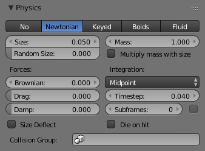

Ньютонова -- Newtonian¶
Орієнтир -- Reference
| Panel: | |
|---|---|
| Type: | Ньютонова -- Newtonian |
Частинки будуть рухатися відповідно до класичних (Ньютонових) механізмів. Частинки починають своє життя з визначеними початковими та кутовими скоростями та рухаються відповідно до зовнішніх сил. Відповідь на середовище та сили обчислюється по-різному, відповідно до заданого інтегратора, обраного аніматором.

Newtonian Physics settings.
Опції¶
Сили -- Forces¶
- Броунівська -- Brownian
- Визначає величину Броунівського руху. Броунівський рух додає випадкове рухання для частинок на основі Броунівського поля шуму. Це добре підходить для імітації малих, випадкових сил вітру.
- Гальмування -- Drag
- A force that reduces particle velocity in relation to its speed and size (useful in order to simulate air drag or water drag).
- Згасання -- Damp
- Скорочує скорість частинок (уповільнення, тертя, гасіння).
Інтеграція -- Integration¶
Інтегратор -- це набір математичних методів, доступних для обчислення руху частинок. Наступні настанови допоможуть вибрати належний інтегратор, відповідно до того, на яку поведінку частинок націлився аніматор.
- Ейлер -- Euler
- Also known as "Forward Euler". Simplest integrator. Very fast but also with less exact results. If no dampening is used, particles get more and more energy over time. For example, bouncing particles will bounce higher and higher each time. Should not be confused with "Backward Euler" (not implemented) which has the opposite feature, the energy decrease over time, even with no dampening. Use this integrator for short simulations or simulations with a lot of dampening where speedy calculations are more important than accuracy.
- Верле -- Verlet
- Дуже швидкий та стабільний інтегратор, енергія зберігається з часом з дуже нечисленним витрачанням.
- Середина -- Midpoint
- Також відомий як «Рунге-Кутта 2-го порядку». Повільніше, ніж Euler, але набагато більш стабільний. Якщо прискорення є постійним (без гальмування, наприклад), то це дає енергоощадність. Слід зазначити, що у прикладі з відскікними частинками, ці частинки можуть відскакувати вище, ніж вони почали, через деякий час, але це не є тенденцією. Цей інтегратор підходить для більшості випадків.
- RK4
- Скорочено від «Рунге-Кутта 4-го порядку». Подібний до Midpoint, але повільніший та у більшості випадків більш точний. Він енергоощадний навіть, якщо прискорення не є постійним. Потребується тільки у складних імітаціях, де Midpoint виявляється не достатньо точним.
Устави кадрів¶
- Крок часу -- Timestep
- Крок часу імітації за кадр.
- Підкадри -- Subframes
- Subframes to simulate for improved stability and finer granularity in simulations. Use higher values for faster-moving particles.
Зіткнення¶
- Відхиляння за Розміром -- Size Deflect
- Вживає розмір частинки у відхиляннях.
- Вмирання при Ударі -- Die on Hit
- Вбиває частинку, коли вона ударяється об відхильний об'єкт.
- Група Зіткнення -- Collision Group
- Якщо задано, то частинки стикатимуться з об'єктами з даної групи, замість використання для цього об'єктів, що знаходяться з ними на одному і тому ж шарі.